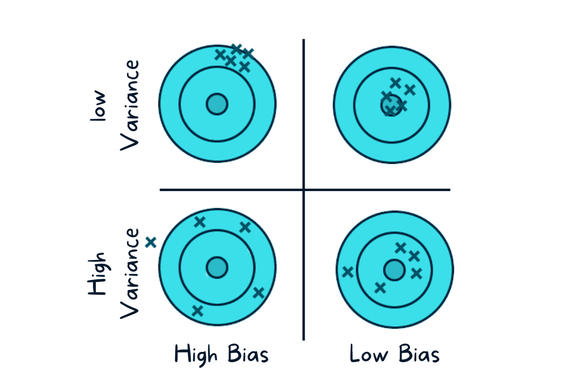
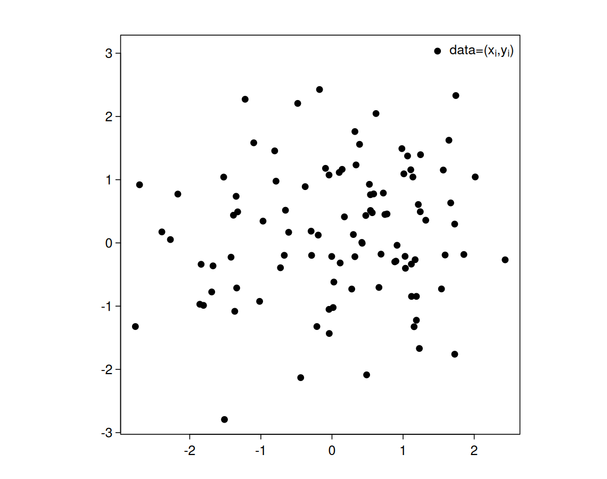
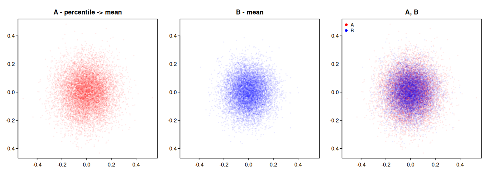
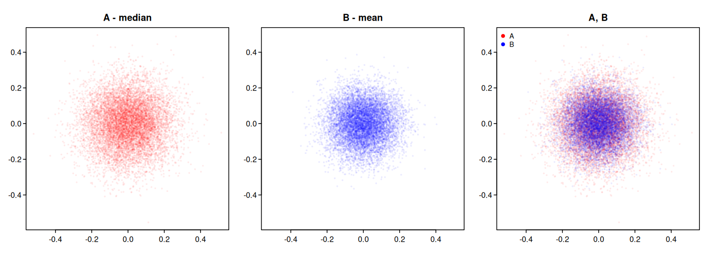
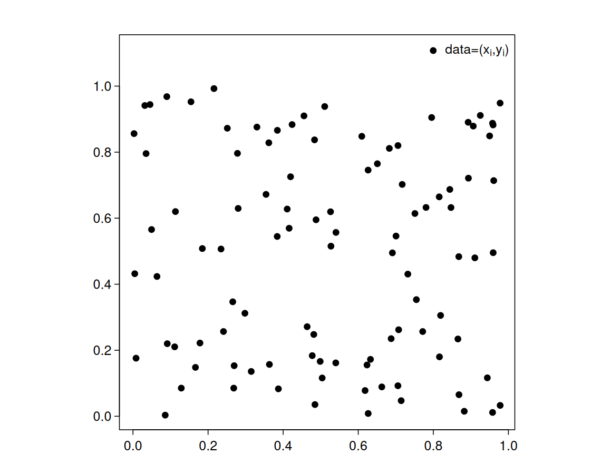
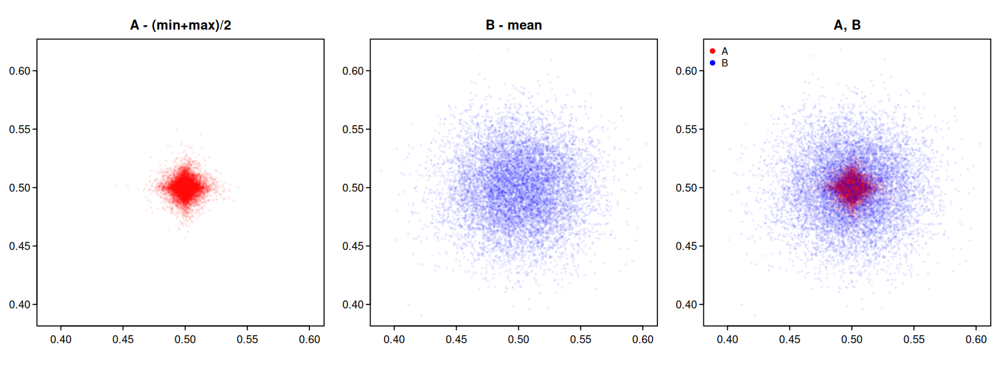

03wk-2: 추정
1. 강의영상
2. 가능도는 그냥 말장난 아닌가?
- 역확률이라는 개념이 싫어서 만들어진 가능도.
- 그렇지만 가능도를 정의할때도 사실상 확률의 개념을 쓰고 만든다.
- 결국 우리 머리속에 남은건 \(L(\theta| data) = P(data| \theta)\) 임.
- 굳이 가능도라는 새로운 이름을 줄 필요까지 있었나?
3. 추정을 잘 하는 사람?
- 명사수란?

ref: https://www.kdnuggets.com/2022/08/biasvariance-tradeoff.html
- 추정을 잘한다는건 어떤 의미일까? “어느것이 더 잘하는 추정인가”를 어떻게 가릴까?
# (생각하는) 예제1 –
아래와 같은 데이터를 관측하였다고 하자.
set.seed(43052)
rnorm(5, mean=0, sd=1)[1] -0.7241543 -0.7868071 0.3221439 1.2452155 0.5412981이 데이터의 모평균을 추정하기로 했다.
A: 모평균은 표본평균으로 추정하는게 합리적이야. 따라서 모평균은 아래처럼 추정해야해.
mean(c(-0.7241543, -0.7868071, 0.3221439, 1.2452155, 0.5412981))[1] 0.1195392B: 모평균은 최대값과 최소값의 평균으로 추정하는게 합리적이야. 따라서 모평균은 아래처럼 추정해야해.
x <- c(-0.7241543, -0.7868071, 0.3221439, 1.2452155, 0.5412981)
(min(x) + max(x)) / 2[1] 0.2292042(풀이?)
딱 봐도 A가 맞지 않아요? B는 데이터를 막 버리잖아요?? 아깝잖아요.. 그리고 모평균을 추정하는데 표본평균을 쓰는건 상식아닌가요?
(반론)
논리적이지가 않음.
아래와 같이 주정하는 C가 있다고 하자.
C: 모평균은 0입니다.
그렇다면 A와 C중 뭐가 맞나요?
#
# 예제2
예제1은 사실 엄밀하지 않다. 좀더 예제1을 엄밀하게 만들기 위해서 아래와 같이 서술하자.
A와 C 는 아래와 같은 자료를 관찰하였다고 하자.
[1] -0.7241543 -0.7868071 0.3221439 1.2452155 0.5412981A와 C는 모두 자료는 아래와 같이 생성되었다고 믿고 있다.
set.seed(43052)
rnorm(5, mean=??, sd=1)즉 A와 C는 모두 아래와 같은 모델을 가정한다. (모델링완료)
\[X_1,\dots,X_5 \overset{i.i.d.}{\sim} N(\theta, 1)\]
그리고 그 모델에서 아래를 관측했다고 믿는것이다.
\[(x_1,x_2,\dots,x_5) = (-0.7241543, -0.7868071, 0.3221439, 1.2452155, 0.5412981)\]
그렇다면 두 사람의 주장은 이러하다
A: 모평균은 표본 평균으로 추정해야 합니다. 즉 \(\theta\)는 \(\frac{1}{n}(x_1+\dots+x_n):=\bar{x}\)로 추정해야합니다.
C: 모평균은 0입니다.
C를 배척할 수 있는 근거를 제시하시오.
(풀이1)
C의 말은 실제로 \(\theta=0\) 일때만 합리적이다. 만약에 \(\theta=5\) 였다면 틀린 주장이다. 좀 더 구체적으로 말하면 아래의 모형에서
set.seed(43052)
rnorm(5, mean=??, sd=1)우연히 ??의 값이 0 일때만 맞고 그 외의 경우는 오답이다. 즉 C의 주장은 임의의 \(\theta\)에 동일한 합리성을 가정하지 않는다.
반면 A의 주장은 ??의 값에 상관없이 동일한 합리성을 가지고 성립한다.
(풀이2) – 통계적추론을 “잘” 아는사람
C는 불편추정량이 아니다. 불편추정량은 아래를 요구하는데,
\[\forall \theta: \mathbb{E}[\hat{\theta}]=\theta\] A의 경우 \(\hat{\theta}=\frac{X_1+\dots+X_5}{5}\) 로 쓰겠다는 의미이고 C의 경우 \(\hat{\theta}=0\) 으로 쓰겠다는 의미이다. \(\theta=0.01\)이라고 가정하고 \(\mathbb{E}[\hat{\theta}]\)를 계산해보자.
- A의 경우: \(\mathbb{E}[\hat{\theta}]=\mathbb{E}\left[\frac{X_1+\dots+X_5}{5}\right]=\frac{1}{5}\big(\mathbb{E}[X_1]+\dots+\mathbb{E}[X_5]\big)=\frac{1}{5}(0.01+\dots+0.01)=0.01\)
- C의 경우: \(\mathbb{E}[\hat{\theta}]=0\)
이 경우 A는 \(\mathbb{E}[\hat{\theta}]=\theta\)이 성립하지만 C는 성립하지 않는다. 이제 임의의 \(\theta\)에 대해서 A와 C방법에서 \[\mathbb{E}[\hat{\theta}]=\theta\] 이 성립하는지 체크해보자.
| \(\theta\) | A의 \(\mathbb{E}[\hat{\theta}]\) | C의 \(\mathbb{E}[\hat{\theta}]\) |
|---|---|---|
| \(\vdots\) | \(\vdots\) | \(\vdots\) |
| \(-0.1\) | \(-0.1\) | \(0\) |
| \(-0.01\) | \(-0.01\) | \(0\) |
| \(0\) | \(0\) | \(0\) |
| \(0.01\) | \(0.01\) | \(0\) |
| \(0.1\) | \(0.1\) | \(0\) |
| \(\vdots\) | \(\vdots\) | \(\vdots\) |
즉 C의 방법은 불편성을 만족하지 못한다.
#
잠깐 주제에서 벗어납니다.
- 되게 미묘한 감각: A의 방식으로 추정하는것, 즉 표본평균으로 모평균을 추정하는 상황에서 아래의 기호가 주는 느낌은 미묘하게 다르다.
- \(\bar{x}=\frac{x_1+\dots+x_5}{5}\) (추정치,estimate)
- \(\bar{X}=\frac{X_1+\dots+X_5}{5}\) (추정량,estimator)
아무렇게나 쓰면안되고 문맥에 따라 조금씩 다르게 써야한다. 1은 추정을 하는 값 자체에 좀 더 포커싱이 되어있다. 예를들어 아래와 같은 자료가 있을 경우
[1] -0.7241543 -0.7868071 0.3221439 1.2452155 0.5412981나는 이것을 어떠한 구체적인 값으로 (예를들면 \(\bar{x}=0.1195392\)) 추정하고 싶다는 느낌으로 문장을 쓸때는 1과 같이 \(\bar{x}\)를 이용하면 된다.
[1] 0.1195392반면에 2는 아직 그 확률변수가 실현되었다는 느낌이 덜하다. (빠져있다기 보다는 덜하다라고 표현하는게 맞는것 같다.) 따라서
\[\frac{1}{n}(X_1+\dots+X_n)\]
이 기호가 주는 느낌은 “뭐 아직 \(X_1 \dots X_n\)이 어떤값인지는 나도 모르거든? 그런데 아무튼 그 값이 나오기만 하면 나는 그걸 다 더한다음에 \(n\)으로 나눌꺼야” 라는 느낌을 준다. 따라서 위의 기호는 “추정을 하는 방법” 자체를 의미하게 된다. 이 분류기준이 꼭 절대적이지 않은 이유는 확률변수가 실현된 순간을 우리는
\[X=x\]
와 같이 표현하기 때문이다. 따라서
\[\frac{1}{n}(X_1+\dots+X_n)= 0.1195392\] 이런 표현도 가능하다. 그런데 뉘앙스는 “우리는 다 더한 다음에 \(n\)으로 나누는 방법을 쓸 생각이었거든? 그런데 그 방법을 썼더니 0.1195392”가 나왔네? 라는 뉘앙스다.
#
# (생각하는) 예제3
엔빵이라는 말이 있다. 식사등을 했을때 전체 비용을 참여한 인원수만큼 똑같이 내는 방식이다. 아래는 최규빈 교수가 흔히 겪는 일상언어이다.
A: “야 오늘 먹은것 엔빵하자”
B: “좋아 좋아, 계산해 볼게. 음 일인당 13,500원 나왔어.”
A와 B의 대화를 바탕으로 추정량와 추정치의 미묘한 차이를 집어내보자. 그리고 아래의 문장들의 뉘앙스도 비교해보자.
- 일인당 13,500원 내면돼. 다들 입금해.
- 엔빵했더니 13,500원이 나왔다.
- 엔빵제대로 한 것 맞어?
- 엔빵은 좀 합리적이지 못한 것 같아. 나는 가난한데 너희들은 대기업다니잖아.
#
이제 다시 주제로 돌아옵니다.
- 추정을 더 잘하는 방법을 평가하기 위해서는 불편성을 포함한 몇 가지 평가항목이 있다. (이걸 전통적인 수리통계학과목에서는 “추정량의 바람직한 성질”이라는 말로 배웁니다) 이 내용은 많다. 그래서 사실 좋은 추정이란 무엇인가? 를 제대로 설명하긴 어렵다.(=길다)
- 그래서 이 강의노트에서는 아래와 같이 간략화된 버전을 소개할 것이다. (\(\star\star\star\))
- 각자가 주장하는 방식대로 “모델 \(\to\) 데이터생성 \(\to\) 추정” 해본다. // 현실에서는 불가능, 강의노트에서나 가능
- 결과를 그림1(명사수그림)처럼 시각화하고 눈으로 판단한다.
앞으로는 이 방법을 편의상 “무한 총 쏘기 시각화”라고 부르자.
4. 추정
- 혹시 지금 이렇게 생각하셨나요?
- 뭐 그렇게 복잡하게 설명해? 그냥 모평균은 표본평균으로 추정하면 좋다는 소리잖아?
- 비슷한 논리로 모표준편차같은건 표본표준편차로 추정하겠지 뭐.
- 다른 것도 그렇지 않겠어?
# (보는) 예제4 – (표본)평균이 그냥 젤 좋은거 아니야?
A,B는 아래와 같은 데이터를 관찰했다고 하자.

(속닥속닥) 이건 비밀인데요, 사실 데이터는 이렇게 만들었어요
set.seed(43052)
x <- rnorm(100, mean=0, sd=1)
y <- rnorm(100, mean=0, sd=1)
plot(x, y, pch=19, xlab="", ylab="")
legend("topright", legend=expression(paste("data=(", x[i], ",", y[i], ")")), pch=19)중심을 추정하는 문제를 고려하자.
- A: 지금보니까 \(x,y\)의 평균은 모두 0 근처에 있는것 같지 않아? 굳이 극단적인 값을 고려할 필요는 없겠어. 그러니까 데이터중 상위 40%와 하위 40%를 잘라서 버린후 남은값들의 평균을 구하는건 어때?
- B: 머리아프게 굳이? 그냥 평균으로 추정하는건 어때?
누구의 말이 더 합리적일까?
(풀이)
(속닥속닥) A,B한테는 비밀로 하고 우리끼리 “무한 총 쏘기 시각화” 기법으로 비교해보죠
A <- matrix(nrow=10000, ncol=2)
B <- matrix(nrow=10000, ncol=2)
for (i in 1:10000) {
x <- rnorm(100, mean=0, sd=1)
y <- rnorm(100, mean=0, sd=1)
#---#
x_sorted <- sort(x)
y_sorted <- sort(y)
A[i,] <- c(mean(x_sorted[41:60]), mean(y_sorted[41:60]))
B[i,] <- c(mean(x), mean(y))
}lim_x <- range(c(A[,1], B[,1]))
lim_y <- range(c(A[,2], B[,2]))
par(mfrow=c(1,3))
plot(A[,1], A[,2], pch=19, col=adjustcolor("red", 0.05), xlab="", ylab="", xlim=lim_x, ylim=lim_y, main="A - percentile -> mean")
plot(B[,1], B[,2], pch=19, col=adjustcolor("blue", 0.05), xlab="", ylab="", xlim=lim_x, ylim=lim_y, main="B - mean")
plot(A[,1], A[,2], pch=19, col=adjustcolor("red", 0.05), xlab="", ylab="", xlim=lim_x, ylim=lim_y, main="A, B")
points(B[,1], B[,2], pch=19, col=adjustcolor("blue", 0.05))
B의 승리입니다.
#
# (보는) 예제5 – (표본)평균이 최고라니까? 쓸대없는거 하지마.
A,B는 다시 아래와 같은 데이터를 관찰했다고 하자.

(속닥속닥) 이건 비밀인데요, 사실 데이터는 이렇게 만들었어요
set.seed(43052)
x <- rnorm(100, mean=0, sd=1)
y <- rnorm(100, mean=0, sd=1)
plot(x, y, pch=19, xlab="", ylab="")
legend("topright", legend=expression(paste("data=(", x[i], ",", y[i], ")")), pch=19)중심을 추정하는 문제를 고려하자.
- A: 중앙값 한번 써보는게 어때?
- B: 그냥 평균으로 추정하는게 젤 좋다니까?
누구의 말이 더 합리적일까?
(풀이)
(속닥속닥) A,B한테는 비밀로 하고 우리끼리 “무한 총 쏘기 시각화” 기법으로 비교해보죠
A <- matrix(nrow=10000, ncol=2)
B <- matrix(nrow=10000, ncol=2)
for (i in 1:10000) {
x <- rnorm(100, mean=0, sd=1)
y <- rnorm(100, mean=0, sd=1)
#---#
A[i,] <- c(median(x), median(y))
B[i,] <- c(mean(x), mean(y))
}lim_x <- range(c(A[,1], B[,1]))
lim_y <- range(c(A[,2], B[,2]))
par(mfrow=c(1,3))
plot(A[,1], A[,2], pch=19, col=adjustcolor("red", 0.05), xlab="", ylab="", xlim=lim_x, ylim=lim_y, main="A - median")
plot(B[,1], B[,2], pch=19, col=adjustcolor("blue", 0.05), xlab="", ylab="", xlim=lim_x, ylim=lim_y, main="B - mean")
plot(A[,1], A[,2], pch=19, col=adjustcolor("red", 0.05), xlab="", ylab="", xlim=lim_x, ylim=lim_y, main="A, B")
points(B[,1], B[,2], pch=19, col=adjustcolor("blue", 0.05))
B의 승리입니다.
#
# (보는) 예제6 – (표본)평균이 최고… 어??!!
A,B는 이제 아래와 같은 데이터를 관찰했다고 하자.

(속닥속닥) 이건 비밀인데요, 사실 데이터는 이렇게 만들었어요
set.seed(43052)
x <- runif(100, min=0, max=1)
y <- runif(100, min=0, max=1)
plot(x, y, pch=19, xlab="", ylab="")
legend("topright", legend=expression(paste("data=(", x[i], ",", y[i], ")")), pch=19)중심을 추정하는 문제를 고려하자.
A: 난 좀 특이하게 하고 싶어. \(x\)중에서 가장 작은 값과 큰값을 뽑고 평균을 구해. 그리고 \(y\)에서 가장 작은값과 큰 값을 뽑고 평균을 구할거야. 그러니까 나는 \[\left(\frac{\min(x)+\max(x)}{2}, \frac{\min(y)+\max(y)}{2}\right)\] 로 추정하는게 좋을 것 같아.
B: 그냥 평균으로 추정하는게 젤 좋음. 제발 쓸 데 없는것 좀 만들지마.
누구의 말이 더 합리적일까?
(풀이)
(속닥속닥) A,B한테는 비밀로 하고 우리끼리 “무한 총 쏘기 시각화” 기법으로 비교해보죠
A <- matrix(nrow=10000, ncol=2)
B <- matrix(nrow=10000, ncol=2)
for (i in 1:10000) {
x <- runif(100, min=0, max=1)
y <- runif(100, min=0, max=1)
#---#
A[i,] <- c((min(x)+max(x))/2, (min(y)+max(y))/2)
B[i,] <- c(mean(x), mean(y))
}lim_x <- range(c(A[,1], B[,1]))
lim_y <- range(c(A[,2], B[,2]))
par(mfrow=c(1,3))
plot(A[,1], A[,2], pch=19, col=adjustcolor("red", 0.05), xlab="", ylab="", xlim=lim_x, ylim=lim_y, main="A - (min+max)/2")
plot(B[,1], B[,2], pch=19, col=adjustcolor("blue", 0.05), xlab="", ylab="", xlim=lim_x, ylim=lim_y, main="B - mean")
plot(A[,1], A[,2], pch=19, col=adjustcolor("red", 0.05), xlab="", ylab="", xlim=lim_x, ylim=lim_y, main="A, B")
points(B[,1], B[,2], pch=19, col=adjustcolor("blue", 0.05))
A의 승리입니다.
#
- 놀라운점
- 차이가 왜 이렇게 많이남? (빨간색의 압승)
- 근데 빨간색은 모양이 왜저래?